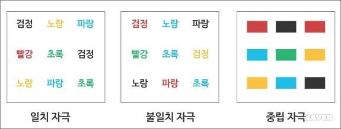
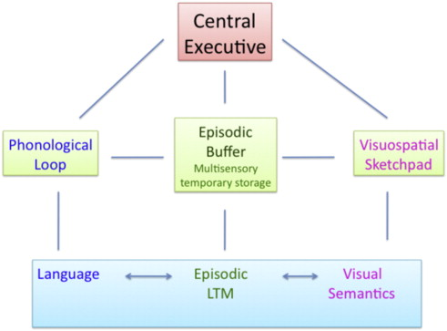

18 신경인지 기능의 이상
Neurocognitive Dysfunction
18.1 역사적 배경
크레펠린이 많은 용어 중에서 조발성 치매라는 명칭을 선택했다는 것은, 이미 그가 조현병의 핵심 증상 중 하나로 인지 기능의 되돌릴 수 없는 손상을 염두에 두고 있었음을 보여준다. 당시에 치매(dementia)라는 용어는 비특이적인 정신질환을 가리키기도 했지만, 이미 18세기에 들어서서는 인지기능의 심각한 결손으로 이해되었다. 피넬(섹션 1.3)은 모든 종류의 정신질환을 melancholia, mania, idiotism, dementia로 나누었으며, dementia의 특징으로 기억력 손실과 판단력 손실을 들었다.[1] 크레펠린이 유독 치매라는 용어를 사용한 것은 조울증과 비교하여 지능의 급격한 감소가 특징적임을 강조하기 위함이었다.[2] 블로일러 역시 조현병의 고유 증상인 4A 증상을 강조하면서, 그중 하나로 연상의 와해(loosening of association)를 들었는데 이 역시 인지기능의 이상을 가리키는 개념이다. 블로일러는 1950년대에 이미 조현병 환자는 1) 질병 경과 중 특정 시기에, 2) 특정 인지 영역에 대해서, 3) 다양한 정도의 인지 손상을 보인다고 지적하였다.[3]
환청이나 망상이 조현병의 가장 두드러진 증상이라고 해도, 모든 환자가 환청과 망상을 겪는 것은 아니다. 그러나 인지기능의 손상은 거의 모든 환자가 겪게 된다. 연령에 따른 규준치에서 벗어나지 않는다 해도, 환자 자신의 병전 인지기능과 비교해보면 대부분 인지기능이 저하되어 있으며, 이러한 저하는 평생동안 조금씩 더 악화된다.[4,5] 어느 특정 시점에 인지기능이 정상수준으로 측정되었다 하더라도, 질병 경과 상 어느 시점에서는 반드시 인지기능이 떨어진 시점이 있다. 이런 면을 종합하면, 조현병의 근본 증상이 정신병적 증상이 아니라 인지 증상이라고 해도 과언이 아니다.
18.2 전반적 인지기능 손상
조현병 환자의 인지기능을 조사하기 시작한 초기의 연구들은 웩슬러 지능검사(Wechsler Adult Intelligence Scale, WAIS)를 사용하였다. 연구 초창기에는 인지 기능의 각 영역이 세분화되지 않았기 때문에 이러한 연구 방법말고는 불가능하였다. 워낙 구태의연한 연구인 탓인지, 조현병 환자와 대조군의 IQ를 비교한 메타 분석 결과가 발표된지도 어언 40년 가까운 세월이 흘렀다.[6] 이 결과에 따르면 질병 경과 중 어떤 시기에 측정해도 대조군에 비해 IQ가 떨어져있으며, 발병 전 아동/청소년 시기에 측정해보아도, 또래보다 IQ가 낮게 나타난다. IQ는 다양한 증상의 심각도나 예후와 상관관계에 놓여있었다. 대부분의 환자들에서 언어적 IQ가 수행적 IQ보다 높은 경향을 보였으나, IQ 각 항목의 구체적인 변화패턴을 찾기는 어려웠다. 물론 이러한 연구로는 IQ가 발병을 앞당기거나 막아주는 요소인지, 아니면 일어난 질병의 결과로 점점 손상되는 것인지 전후 순서를 가리는 것은 불가능하다.
이를 알기 위해선 발병 전 IQ를 분석하는 작업이 필요하다. 이는 우연히도 조현병이 발병하기 전에 IQ 검사를 해놓았던 적이 있는 환자들의 자료를 이용하거나, 읽기 검사를 통해 병전 IQ를 추정하는 방식으로 진행할 수 있다. 이런 방식의 연구를 종합한 메타 분석에 따르면, 발병 전에도 이미 환자들은 대조군에 비해 IQ가 낮게 나타난다. 자료의 불충분으로 말미암아 발병 직전까지 IQ가 점점 손상되는지 여부는 확인되지 않았다. 그러나 분명한 것은 일단 발병하고 나면, 그 전에 비해 IQ가 더 감소한다는 것이다.[7]
18.3 개개 영역의 인지기능 손상
인지심리학에 대한 연구가 자리를 잡아가면서 인지 현상은 수십 개의 세부 영역으로 나뉘어 고려되기 시작하였다. 해당 세부 영역을 측정하는 도구들이 개발되면서, 각 영역을 환자-대조군 간에 비교하는 연구도 활발하게 이루어졌다. 이런 연구를 거듭하면, 조현병 환자의 독특한 인지 손상 패턴을 찾아내고 그 기저에 깔린 신경생물학적 기전을 밝혀낼 수 있을 것이다. 그러나 명심할 것은 아무리 잘 고안된 평가도구를 써도, 세부 영역의 기능만을 따로 떼서 측정하기는 어렵다는 것이다. 어떤 인지과제를 수행할 때도 다양한 인지기능이 복합적으로 관여하며, 각 인지기능 들은 서로 긴밀한 상관관계를 맺고 있다.
DSM-5는 주요 정신질환과 연계되는 인지기능을 크게 6개 영역으로 나누고 있다. 이는 1) 주의력, 2) 집행 기능, 3) 학습과 기억, 4) 언어, 5) 지각-운동 기능, 그리고 6) 사회적 인지이다. 각각의 영역은 하위 세부 영역으로 나뉜다. 이러한 구분에 따라 조현병과 관련하여 흔히 거론되는 인지기능 장애의 특징을 논의해보고자 한다.
18.3.1 주의력
현대적 신경인지기능 검사의 도구가 갖춰지기 전에도, 이미 조현병 환자가 주의를 기울이거나 유지하는데 어려움을 겪는다는 것이 잘 알려져 있었다. 크레펠린과 블로일러조차 주의력을 일정 시간 이상 유지하지 못하는 것이 조현병 환자의 특징이라고 말할 정도였다.[8]
모든 인지기능과 마찬가지로 주의력 역시 단일한 기능으로 보기 어렵다. 주의력은 대체로 경계, 정향, 선택, 집행 기능1의 세부 프로세스로 나눌 수 있으며, 과제를 해결하기 위해 주의력을 유지하는 것은 뒤의 두 프로세스가 맡게 된다. 조현병 환자들은 다른 많은 정신질환과 마찬가지로, 경계/정향 단계에는 문제가 없지만, 선택/집행 기능에서 기능이 떨어진다. 앞절에서 이미 감각 관문의 문제나 비정상적 현저성 등, 조현병 환자는 불필요한 것에서 필요한 것은 골라내는 데 근원적인 어려움을 겪는다는 것을 논의하였다. 인간은 항시 주의를 산만하게 하는 내외 자극에 노출되어 있는데, 이중 과업에 필요한 것을 선택하고 그렇지 못한 것은 무시해야만 제한된 인지적 자원을 효율적으로 사용할 수 있다. 조현병 환자는 총체적으로 이런 고위 집행 기능에 문제가 있기 때문에, 주어진 과업에 몰입할 수 없으며, 어떤 자극에 주의를 기울일 지 결정하지 못하는 바람에 그 어느 자극에도 제대로 집중하지 못한다.
1 경계(alerting)는 깨어있어 자극을 받아들일 준비가 되어 있는 정도를 의미하며, 정향(orienting)은 표적을 향해 주의를 돌리는 것이다. 선택(selecting)이란 동시에 유입되는 자극 중에서 불필요한 것을 걸러내고 필요한 것에만 주의를 기울이는 것이며, 이런 모든 과정을 통합, 관리하는 것이 집행 기능(executive function)이다.
주의력과 집중력은 거의 모든 인지과제 수행에 필수적인 요소이기 때문에, 이 기능이 떨어지면 다른 과제 수행도 떨어지기 마련이다. 주의/집중에 특화된 검사에는 스트룹 색상-단어 검사(Stroop color-word test), 지속수행 검사(continuous performance test), 주의력 전환 검사(attention set shift test) 등이 있다.(그림 18.1) 조현병 환자들은 이 모두에서 수행 성적이 대조군보다 떨어진다. 스트룹 검사에서는 주로 억제 반응이 수월히 일어나지 못하며, 지속수행 검사에서도 현저한 자극을 자꾸 놓친다. 지속수행 검사의 경우 이는 환자가 쉽게 지루해하거나 과제에 열성을 보이지 않는다기 보다는, 주어진 신호를 신속하게 부호화(encoding)한 후 작업기억에 보관하는 과정에 문제가 생기는 것으로 이해된다.[9]

지속수행 검사의 예처럼, 검사의 이름(“지속수행”)이 암시하는 인지기능과 실제 문제가 되는 인지기능(“부호화”)이 정확히 맞아떨어지지 않을 때가 있다. 주의력을 검사하는 과업이라 하더라도, 실상은 이를 구성하는 프로세스 각각의 기능이 모두 제대로 이루어져야 수행 성적이 제대로 나온다. 또한 주의력이 작업기억이나 부호화 과정에 의지하는 것처럼, 한 인지기능이 다른 인지기능들에 의존하는 경우, 얻어진 검사 결과가 후자의 기능들을 반영할 수도 있다. 이러한 문제점은 앞으로도 계속 반복될 것이다.
18.3.2 기억력
18.3.2.1 기억력의 종류
기억력은 보통 명시적 기억2과 암묵적 기억3으로 나뉘며, 전자는 다시 의미 기억4과 삽화 기억5으로 나뉜다. 조현병에서 드러나는 기억력 손상은 암묵적 기억 보다는 명시적 기억에서 훨씬 두드러진다. 물론 암묵적 기억 또한 정상인에 비해 저조하지만, 개념 추론이 개입되지 않는 암묵적 기억 과제에서는 정상인과 별 차이가 없었다.[10] 삽화 기억이란 과거에 일어났던 사건과 그 사건이 발생한 맥락을 함께 기억하는 것으로, 조현병 환자에서 특히 손상이 심하다.[11] 모든 삽화 기억은 자신과 어느 정도 연관성이 있는 것이겠지만, 특히 자신의 삶과 관련된 기억을 자서전적 기억이라 하는데, 이 또한 명백하게 기능이 낮아져 있다.[11] 이에 비해 의미 기억의 경우 대조군보다 떨어지는 것은 분명하지만, 측정하고자 하는 영역이나 방법론에 따라 편차가 심하여 삽화 기억만큼 정도가 심하지 않다.[12]
2 명시적 기억(declarative memory): 언어(명제)로 표현될 수 있는 기억이며, 의식적이고 의도적으로 정보를 끄집어낼 수 있다.
3 암묵적 기억(implicit memory): 언어(명제)로 표현하기 힘든 기억이며, 의식하지 못한 상태에서 기억된 과거 경험이 현재 행동을 수행하는데 도움을 주거나 영향을 끼치는 것이다.
4 의미 기억(semantic memory): 경험이 배제된 지식적인 기억으로 책에서 읽은 지식 등이 대표적 예이다. 맥락과는 관계없는 추상적 지식이다. 책에서 읽은 내용은 의미 기억이지만, “초등학교 때 그 책을 읽었던 기억”은 삽화 기억이다.
5 삽화 기억(episodic memory): 자신이 직접 경험한 것에 대한 기억. 어느 특정 시간과 장소에서 일어났던 과거 경험의 모음이며, 사건 자체 뿐 아니라 시간, 장소, 감정 등 맥락이 동시에 기억된다. 이중 특히 자신에게 일어난 경험에 대한 삽화 기억과 그것이 자신에게 갖는 의미, 영향 등에 대한 의미 기억을 합쳐 자서전적 기억(autobiographical memory)이라고 한다.
어떤 범주의 기억이든, 이를 측정할 때는 단기 기억6과 장기 기억7으로 구분하여 측정할 수 있으며, 기억했는지 확인하는 방법도 자유 회상(free recall)과 재인(recognition)으로 나눠 평가할 수 있다. 환자군은 대조군에 비해 측정 방법과 상관없이 수행성적이 떨어지며, 이는 언어적이든 비언어적이든 마찬가지이다.[13,14] 정상인도 재인보다는 자유 회상을 어려워하는데, 환자들은 자유 회상 과제에서 대조군과의 수행 성적 차이가 더욱 두드러졌다.[13]
6 단기 기억(short-term memory) 혹은 즉각적 기억(Immediate memory): 단기와 장기 기억의 구분은 유지되는 시간이라기 보다는 정보 처리의 수준에 달려있다. 정보를 처리하지 않거나 최소한의 처리만 한 채, 단기간 유지하는 것을 단기 기억이라하며, 그 의미를 해석하고 다른 기억들과 연결시키는 등 정보처리후 저장하는 것을 장기 기억(long-term memory)이라고 한다. 유지되는 시간은 보통 30초 이하이다. 작업 기억(working memory), 즉각 회상(immediate recall) 등과 엄밀하게는 구분되는 개념이지만 문헌에서는 보통 혼용된다.
7 장기 기억(long-term memory): 기억을 단기와 장기로 나눈 것은 Atkinson과 Shiffrin이 1968년 발표한 기억 이론에서 비롯되었다. 이들에 의하면 단기 기억은 반복되면서 장기 기억으로 전환되어 저장되며, 필요할 때 꺼내 쓰게 된다. 장기 기억은 용량이나 지속 시간에 한계가 없지만, 모든 기억을 자유롭게 꺼내 쓸 수 있는 것은 아니다. 맥락, 힌트, 다른 기억과의 연관성 등에 의해 인출 효율이 달라진다.
기억은 후향적(retrograde) 기억과 전향적(anterograde) 기억으로도 나눌 수 있다. 의미 기억처럼 단어의 뜻이나 기본 상식들을 물어보는 것, 혹은 과거에 일어났었던 일을 기억하는 삽화 기억은 후향적 기억에 속한다. 이에 비해 실험실에서 사물의 이름을 들려주거나 사물의 사진을 보여준 후 기억하게 하는 것은 전향적 기억에 속할 것이다. 조현병 환자는 후향적, 전향적 어떤 과제에서도 대조군보다 수행성적이 떨어진다.[15] 그것이 의미 기억이든[12] 삽화 기억이든[13], 자신과 관련된 자서전적 기억이든[16], 기억의 종류와 관계없이 기능 저하가 관찰된다.
18.3.2.2 정보의 부호화와 인출
만약 인간의 기억을 컴퓨터 저장 장치에 비유한다면 하드 디스크에 기록하고(부호화), 저장하고(저장), 읽어내는(인출)8 세 과정 모두가 조현병 환자에서 문제가 있다. 그러나 인간의 기억을 컴퓨터에 비유하는 것은 일부는 맞고 일부는 틀리다. 인간의 뇌에서 정보를 저장하는 뇌 영역과 정보를 처리하는 뇌 영역은 동일하다.[18] 기억 과제는 정보의 저장 능력만을 평가하는 것이 아니다. 기억이 오랜 동안 유지되기 위해선 효율적으로 정보를 부호화해야 하며, 이는 관련된 정보들과 얼마나 많은 연결을 지어서 저장했는가에 달려있다. 기억을 끄집어 내는 과정도 마찬가지이다. 만약 의도한 내용이 떠오르지 않을때, 인간은 이와 관련된 주변 기억들을 먼저 떠올리고 이를 통해 목적한 기억에 도달하는 다양한 인지적 수단을 강구한다. 조현병 환자가 기억력 장애를 보이는 것은 단순히 저장의 문제라기 보다는, 이렇게 연관된 고위 인지기능이 제대로 기능하지 않기 때문이다.[19] 오래전부터 조현병의 기억 장애는 저장 자체보다는 부호화와 인출 기능에 문제가 있기 때문이라고 여겨져 왔다.[20]
8 부호화(encoding)는 감각 정보를 기억 속에 저장 가능한 표상으로 전환하는 것, 저장(storage)은 부호화된 정보를 기억 속에 유지하는 것, 인출(retrieval)은 기억된 정보를 필요할 때 끄집어내는 것을 말한다. 이렇게 구분하기 시작한 것은 심리학자 Arthur Melton이다.[17]
예를 들어 알츠하이머 치매에서 나타나는 의미/삽화 기억의 장애는 저장된 정보의 붕괴 때문으로 여겨진다. 반면, 조현병에서는 전형적인 저장 정보의 붕괴는 나타나지 않는다.[21] 실험실 상황에서 부호화와 인출에 관련된 전략을 조정하도록 유도하면 기억 수행 정도가 상당히 상승하는 모습을 보이며, 이러한 효과는 인지재활치료의 기반이 되고 있다.[22]
18.3.2.3 인출 전략과 기억의 활성화 확산
삽화 기억의 부호화는 좌측 전전두엽, 인출은 우측 전전두엽이 관장한다는 이론이 있으며 이들 부위는 조현병 환자에서 유난히 기능 저하가 두드러진 부위이다.[23] 정보를 효율적으로 부호화하려면, 삽화가 벌어졌던 상황이나 주변과의 관계, 그 삽화의 이전과 이후 벌어졌던 사건 등 맥락이 함께 저장되어야만 한다. 특히 삽화와 자신과의 관계성 여부가 함께 부호화되어 자서전적 기억으로 전환되어야 더 기억에 오랜 남는다.[24] 조현병 환자들은 심지어 단어 사용에서조차 이러한 주변 맥락을 이용하는데 곤란을 겪으며[25], 자서전적 기억에 있어서도 자신이 어떤 맥락에서 경험을 했는지 제대로 기억하지 못한다.[26] 정상인의 뇌는 새로운 정보가 입력되면 이와 관련된 의미를 담고 있는 신경 영역까지 활성이 전파되어 광범위한 신경망이 활성화된다. 기억을 인출할 때도 역시 광범위한 신경망으로부터 역으로 거슬러 올라와 목적했던 정보를 끄집어 내는데, 이를 기억의 활성화 확산(spreading activation) 이론이라고 한다.[27] 조현병 환자에게 기억력 과제를 주면서 특별한 부호화 전략을 쓰도록 유도할 수 있다. 그 한가지 예가 relational and item-specific encoding (RISE)이다.[28] Relational encoding이란 “A는 B에 부합한다”는 식으로 두 대상의 관계성을 기억하게 하는 것이고, item-specific encoding이란 “A는 생물/무생물이다”는 식으로 대상 A에 국한된 사항을 기억하게 하는 것이다. 이렇게 측정하면 조현병 환자는 전자의 과제에서 훨씬 수행 저하가 두드러지며, 후자의 과제에서는 별다른 손상을 보이지 않는다.[28,29] 이러한 관찰결과를 보면, 환자들이 무언가를 기억하고자 할 때 활성화 확산의 범위가 정상인보다 국한될 것임을 짐작할 수 있다.[30]
18.3.2.4 조현병 환자의 기억력 장애
따라서 조현병의 기억력 장애는 단순히 정보의 저장에 국한된 손상이 아니다. 무언가를 기억하고, 이를 끄집어 낸다는 것은 훨씬 더 복잡하고 다양한 하위 인지기능의 협조와 조율을 필요로 한다. 조현병의 기억 장애와 해마의 용적 사이의 관계는 연구마다 결과가 불일치하여 뚜렷한 결론을 내리기 어려운데 비해, 기억 장애와 배외측 전전두피질의 용적 혹은 fMRI로 측정한 활성화 정도는 거의 예외없이 밀접한 상관관계를 보인다.[29] 이는 어느 한가지 인지기능만을 따로 떼서 고려할 수 없다는 일반원칙에도 부합한다.
기억의 곤란은 조현병 환자의 사회적/직업적 기능수행에 직접적인 영향을 미친다. 기억이 되지 않는다는 것은 학습이 이루어지기 힘들다는 뜻이며, 이미 학습한 정보도 제대로 꺼내 쓰지 못한다는 뜻이다. 따라서 기억력 수행 정도가 삶의 질에 큰 영향을 미칠 수 있음은 의심할 여지가 없다. 단순히 사회적/직업적 기능이 아니더라도, 기억의 문제는 환자 자신의 정체성 유지에도 악영향을 끼친다. 과거로부터 현재를 거쳐 미래까지 이어지는 잡다한 경험들을 모두 나의 경험으로 묶어내는 기억이 없다면 일관된 정체성을 유지하기 힘들 것이다. 또한 미래를 예견하는 것 역시 일관된 나가 존재해야 가능한 것이기 때문에, 조현병 환자들은 자신의 미래를 내다보기 어려워한다.[31,32] 이러한 어려움은 존재론적 불안을 야기할 수 있다.
18.3.3 작업 기억
기억과 긴밀한 관련을 맺고 있는 인지기능 중 하나가 작업 기억(working memory)이다. 작업 기억이란 컴퓨터로 비유하면, 중앙연산장치(CPU)의 캐시 메모리에 해당한다. CPU가 연산을 처리할 때는, 메인 메모리(RAM)에 접근하기 전에 캐시 메모리를 먼저 탐색하여 가장 최근에 사용했던 정보가 남아있는지 확인하고, 남아있으면 이를 활용한다. 캐시 메모리는 용량은 적지만 처리 속도가 매우 빠르며, 특히 CPU가 읽어들이는데 거의 시간이 걸리지 않기 때문에 CPU 성능을 확장하는데 중요한 역할을 한다.
인간의 작업 기억도 용량은 매우 작지만, 가장 최근에 인식한 정보를 저장하고 있으면서, 연산 과정에 즉각 이용될 수 있도록 돕는다. 따라서 만약 작업 기억의 용량이 너무 작거나, 저장된 내용이 쉽게 사라져 버리면 제대로 된 인지기능이 진행될 수 없을 것이다. 또한 컴퓨터의 캐시 메모리가 CPU 내부에 장착되어 있는 것과 마찬가지로, 작업 기억 또한 주요한 정보처리가 일어나는 배외측 전전두피질에서 담당한다고 믿어지고 있다.
작업 기억은 생각보다 고도의 인지 기능을 요구한다. 뇌가 정보를 처리하고자 하면, 연산 장치가 다룰 수 있는 형태, 즉 표상(representation)된 형태로 연산 장치에 제공되어야 하며, 연산이 끝날 때까지 그 형태를 유지하고 있어야 한다. 주의가 분산되는 바람에 미처 처리가 끝나지 않은 상태에서 표상이 소실되면 전체 연산이 중단되어 버린다. 역으로 시시각각 입력 정보가 바뀌면, 표상 또한 이를 반영하여 유연하게 갱신될 수 있어야 한다. 이처럼 상황에 실시간으로 대응하며 정보를 표상하기 위해선 고도의 인지기능이 요구될 수 밖에 없다. 일반적으로 작업 기억이 제대로 발휘되기 위해서는, 1) 정보를 부호화하고, 2) 이를 표상하며, 3) 불필요한 주변 자극을 억제하여 표상을 유지함과 동시에, 4) 필요할 때 신속하게 가져다 쓸 수 있는 능력이 갖춰져야 한다.

Baddeley9[34]는 작업 기억을 상위의 집행 시스템(executive system)과 그보다 하위에 위치한 두 개의 시스템, 즉 음운루프(phonological loop)와 시공간 잡기장(visuospatial sketchpad)으로 나누었고, 이후 또 다른 하위 시스템으로 삽화기억 버퍼(episodic buffer)를 추가하였다.(그림 18.2) [35] 작업 기억은 보통 N back test, forward/backward digit span test, delayed AX-continuous performance test 등으로 측정하는데, 이들 각각은 Baddeley가 언급한 시스템 중 서로 다른 부분을 측정하기 때문에 해석에 주의를 요한다. 메타 분석에 따르면 세가지 시스템 모두에서 조현병 환자들은 대조군에 비해 현저히 저하된 성적을 보였으며, 이는 환자의 IQ로는 설명되지 않았다.[36] 작업 기억의 손상은 조현병 환자에서 일관되게 나타나는 몇 안 되는 기능 손상 중 하나이며, 환자 뿐 아니라 환자 가족에서도 발견된다는 점에서 조현병의 내적 표현형이라 볼 수 있다.[33] 그러나 양극성 장애나 우울증 환자에게서도 작업 기억의 손상이 나타나는 바 조현병에 특이하다고 보기는 힘들다.
9 Alan Baddeley (1934~): 영국의 심리학자. 기억에 대한 연구로 유명하며, 작업 기억에 대한 개념과 모델을 제안하였다. Baddeley는 최초의 작업 기억 모델을 1974년 Graham HItch와 함께 제안하였다. 삽화기억 버퍼는 25년 후인 2000년에 추가되어 현재의 모델에서 작업 기억은 4개의 요소로 구성되어 있다.
작업 기억의 손상때문에 다른 중요한 인지기능들이 제대로 이뤄지지 않지만, 역으로 다른 인지기능의 문제때문에 작업 기능이 손상을 받을 수도 있다. 조현병 환자는 필요한 것과 불필요한 것을 잘 구분하지 못하고, 주의를 적절히 배분하지 못하기 때문에 연산처리에 필요한 정보에 주의를 기울여 부호화하는데 어려움을 겪는다.[37] 음운루프보다는 시공간 잡기장에서 더 저하가 두드러진다는 점[36,38]에서 지각정보의 처리과정(특히 시공간 정보)에 이상이 문제시되기도 한다. 작업 기억의 유지는 주의가 산만해질 수 있는 주변 자극에도 불구하고, 표상을 붙잡고 놓지 않는 능력이기도 하며, 이는 주의집중력 문제와도 연관이 된다. 또한 청각적 혹은 시각적 부호를 조작하는 능력도 무관하지 않다. 연산이란 하나의 기호를 다른 기호로 전환하는 심볼 조작(symbol manipulation) 과정이기도 하다. 이러한 연산자체가 제대로 이뤄지지 않으면, 기억된 표상이 유지될 수 없다. 다만 조현병 환자에서는 심볼 조작 기능이 손상되지 않은 상태에서도 작업 기능이 떨어지는 분리 현상이 보고되기도 하였다.[39]
작업 기억은 배외측 전전두피질의 기능과 밀접한 관련이 있다. 영장류를 이용한 실험에서 배외측 전전두피질을 파괴하면 작업 기억 능력이 소실된다는 관찰결과는 신경인지기능 연구에 있어서 기념비적인 성과 중 하나였다.[40] Goldman-Rakic(섹션 14.5.1)과 동료 연구진은 이러한 실험 결과를 통해 전전두엽 신경회로와 작업 기억의 관계를 밝혔으며, 더 나아가 고위 인지기능이 전전두엽 및 전전두엽이 기타 뇌 영역과 맺는 연결에서 비롯된다는 사실을 알아내었다.[41] 게다가 도파민이 작업 기억을 유지하는데 중요한 기능을 한다는 것 또한 입증하였다.[42]
조현병 환자가 보이는 작업 기억의 장애는, 그 자체로서의 중요성 뿐만이 아니라, 조현병의 핵심 병태생리를 선조체가 아니라 전전두엽에서 찾아야 한다는 인식이 생겨난 출발점이라는 점에서 큰 의미가 있다. 이후 이어진 신경영상학적 연구, 신경인지연구는 전전두엽을 주요 연구 대상으로 삼게 되었고, 도파민 가설, 글루타메이트 가설 등 역시 전전두엽의 중요성을 강조하기 위해 수정되었다.
18.3.4 집행 기능
18.3.4.1 집행 기능의 정의
집행 기능(executive function)을 정의하기란 쉽지 않으나, 널리 통용되는 정의에 따르면 “주어진 목표를 달성하는데 적절한 문제해결 지향적 태도를 일정 시간 유지할 수 있는 능력”이다.[43] 인간은, 너무나 익숙하여 반사 행동만으로도 목표를 달성할 수 있는 경우를 제외하고는, 주어진 목적을 달성하기 위해 다양한 인지 기능들을 동원하고 조직화하여야 한다. 또한 자신의 사고와 행동을 실시간으로 모니터링함으로써, 필요한 행동을 선택하고, 적절하지 않은 행동을 억제해야 한다. 따라서 집행 기능은 크게 두가지 요소로 구분되는데, 첫째는 의욕을 발휘하여 목표를 세우고, 관련 정보를 표상하여 이를 작업 기억에 담아두며, 표상된 정보를 조작하여 구체적인 수행 계획을 세우는 과정이다. 둘째는, 관련없는 자극에 주의가 분산되지 않도록 하며, 지금 하고 있는 행동이 목표에 부합하는지를 점검하고, 사회적으로 용납되지 않는 행동으로 빠지지 않는 지 검열하는 과정이다. 특히 후자를 인지적 조절 혹은 셀프-모니터링이라 부르기도 한다.(섹션 16.4.1)
집행 기능 개념의 역사는 생각보다 오래되었다. 1940년대에 이미 선택적 주의라는 개념이 등장했으며, 1975년 Posner는 인지적 조절(cognitive control)이라는 용어를 제안하였다. 한편 “executive”라는 용어를 실제로 처음 사용한 학자는 Pribram10이다. 그는 뇌기능을 조직화하기 위해 “집행 프로그램”이 가동되어야 하며, 이는 거의 전적으로 전두엽의 기능이라고 하였다.[44]
10 Karl Pribram (1919~2015): 미국의 심리학자, 정신과 의사. 변연계 개념을 정립하고 변연계와 전두엽의 집행기능 간의 상호관계를 연구하였다.
집행 기능은 모든 목표지향적 행위에 수반되며, 여기에 참여하는 하위 기능으로는 추상적 개념화, 인지의 유연성 및 융통성, 계획수립과 시간순서 판단, 주도성, 의욕과 동기, 감정과 행동의 억제 및 조절 등이 포함된다. 집행기능이 손상되면 자발성이나 자기 조절력에 문제가 생기며, 무의욕 상태가 되거나, 주어진 과제를 어떻게 수행할 지 몰라 쩔쩔매기도 하며, 반대로 사회적으로 용인되지 않는 행동을 통해 과제를 해결하려 달려들기도 한다.[45] 처음 집행 기능이 개념화될 때는 전두엽 기능과 동일시되었고, 그 때문에 집행 기능에 문제가 생긴 환자를 전두엽 증후군(frontal lobe syndrome)이라 칭하기도 하였다.[46] 그러나 연구결과와 임상경험이 축적되면서, 집행 기능이 반드시 전두엽에 국한된 것은 아님이 확실해졌다. 이에 Baddeley는 dysexecutive syndrome이란 용어를 제안하기도 하였다.[47]
18.3.4.2 조현병 환자의 집행 기능
집행 기능은 오래전부터 조현병 환자에서 유의하게 떨어지는 기능 중 하나로 알려져 왔다. 크레펠린은 조현병 환자들의 정신적 효율성이 매우 떨어져있다고 하였고, Výgodsky11는 1930년대에 이미 조현병 환자들은 추상적 개념을 다루는 능력이 심하게 떨어져 있다고 하였다. 40년대 들어서 진단적 심리검사를 도입한 Rapaport12는 조현병 환자들이 “판단력, 주의력, 집중력, 계획 수립 능력, 상황 예측 능력”에서 두드러진 손상을 보인다고 하였다.[48]
11 Lev Simkhovich Výgodsky (1896~1934): 소련의 심리학자로 아동의 인지심리학적 발달을 연구하였다. 이른 나이에 사망한데다가 소련 학자였기 때문에 거의 알려지지 않다가, 1980년대에 비로소 각광받기 시작하였다. 아동의 인지발달이 주변 환경과의 상호작용에 의한 것이라는 이론, 언어가 사고의 표현일 뿐 아니라 사고를 하는 도구이기도 하다는 이론으로 잘 알려져 있다.
12 David Rapaport (1911~1960): 헝거리의 심리학자이자 정신분석가. 진단적 심리검사의 개념을 도입하였고, 인지검사, 성격구조검사를 포함하는 포괄적 심리검사의 발판을 마련하였다.
집행 기능이라는 개념이 소개된 것은 오래되었지만, 그 개념이 모호할 뿐더러 이를 제대로 측정할 수 있는 평가도구가 없어서 관련연구는 상당히 지연되었다. 1940년에 위스콘신 카드 분류 검사(WCST)13가 도입되었고[49], 1990년대 이후 조현병 환자에게 이 검사를 수행하기 하는 연구가 본격적으로 등장하기 시작하였다.[50] WCST는 전체 집행 기능이라기보다는 그중 일부인 인지세트의 유연한 변경 능력(set-shifting capacity)을 측정하는 검사이다. 조현병 환자에게 WCST를 수행하도록 하면 유달리 보속 오류14를 많이 보이는데, 이는 환자들이 개념 형성과 인지적 유연성에서 먾이 뒤쳐진다는 것을 의미한다. 동시에 WCST를 수행하도록 하면서 배외측 전전두엽의 혈류량을 재면, 환자군은 대조군에 비해 혈류량 증가의 폭이 매우 적음을 관찰할 수 있었다.[51] 이 연구를 계기로, 배외측 전전두엽은 조현병 이해에 있어서 가장 중요한 부위로 부각되기 시작하였다.
13 위스콘신 카드 분류 검사(Wisconsin Card Sorting Test,WCST): 한 개의 빨간색 삼각형, 두 개의 초록색 별형, 세 개의 노란색 십자가형, 네 개의 파란색 원형이 그려진 4가지 종류 64장의 카드를 분류하는 검사이다. 검사자는 도형의 갯수, 모양, 색깔 중 하나를 염두에 두고 환자의 매 시도에 대해서 “맞습니다”, “틀렸습니다”라는 답만 해준다. 환자는 이를 통해 검사자의 의도를 추론하여 맞게 분류해야 한다. 어느 정도 맞으면, 검사자는 환자에게 알리지 않고 분류 규칙을 바꾸는데, 환자는 이번에도 바뀐 규칙을 새로 추론해내야 한다.
14 보속 오류(persevative error): 위스콘신 카드 분류 검사에서 새로운 정보가 주어졌음에도 불구하고 이전에 획득된 범주에 따라 계속하여 같은 규칙만을 적용하는 잘못된 반응
그러나 집행 기능이 다양한 하위 인지 기능을 아우르는 관계로, 집행 기능 이상을 다른 인지기능과 따로 떼내어 측정한다는 것은 거의 불가능하다. 이 때문에 WCST로 측정한 결과가 과연 집행 기능에 국한된 것이냐는 비판도 제기되었다.[52] 이 때문에 다양한 집행 기능을 전반적으로 평가하는 Behavioral Assessment of the Dysexecutive Syndrome (BADS)이 개발되었다.[53] 특히 이 평가도구는 실생활에서 충분히 접할 수 있는 상황을 중심으로 테스트를 설계하여, 집행 기능이 일상 생활을 어떻게 방해하는지에 대한 자료를 얻을 수 있었다. BADS를 이용한 연구들의 결과를 분석한 메타 연구에 따르면 BADS의 모든 항목에서 환자군의 수행 성적은 크게 떨어졌다. 하위 항목 중 시간 순서 판단과 계획 수립에서는 중등도의 효과 크기가 얻어진 반면, 인지적 유연성, 인지적 조절, 생소한 문제 해결에서는 고도의 효과 크기가 얻어졌다. 또한 유병 기간이 오래될수록 손상이 더 심한 것으로 나타났다.[54]
18.3.4.3 집행 기능과 기능 수준
집행 기능의 이상은 조현병 환자가 일상에서 겪는 기능적 어려움을 설명하는 이해의 틀로 자주 언급되었다. 집행 기능의 이상은 발병 전부터 이미 드러나기 시작하며, 이미 이 당시부터 사회적/직업적 적응에 어려움을 야기한다.[55] 또한 발병 당시의 집행 기능 손상 정도는 이후 음성 증상의 정도 및 대인관계, 사회적응, 독립적 생활 여부에 유의한 영향을 미친다.[56,57] 이 밖에도 집행 기능의 손상이 양성 증상의 발생 및 유지에 직접적 영향을 미친다는 견해도 있다.[58] 때문에 조현병 환자의 인지재활치료에는 거의 반드시 집행 기능 훈련이 포함된다. 물론 단기간의 훈련으로 집행 기능이 조금 호전된다고 해도, 그러한 호전이 실제 증상 경감이나 사회적응에 큰 도움이 되는지는 별개의 문제이지만, 질병으로 인한 후유증을 최소화하기 위해서라도 인지재활치료가 도움이 될 것으로 기대된다.[59,60]
18.3.5 사회적 인지
사회적 인지란, 타인과 어울리는 상황에서 다른 사람의 마음을 읽고 전반적인 상황판단을 할 수 있는 능력, 소위 분위기를 파악할 수 있는 능력을 가리킨다. 타인과 눈을 맞추거나, 익숙한 얼굴을 알아보는 등 원시적인 사회적 인지는 태어날 때부터 갖춰져 있으며, 유년기의 발달과정을 거쳐 점점 더 정교화된다. 사회적 상황을 제대로 판단하려면, 겉으로 드러난 타인의 행동만을 보고 심리내부의 의도, 성향, 감정 등을 읽어내야 하기 때문에, 소위 마음 이론15과 연결되어 있다.
15 마음 이론(theory of mind): 자신에게 믿음, 의도, 욕구, 거짓, 지식 등이 있는 것처럼 타인에게도 고유한 정신상태가 있음을 인식하고, 타인과 자신의 믿음, 욕구, 의도와 관점은 다를 수 있다는 것을 이해할 수 있는 능력
마음 이론이란 원래 영장류의 생태를 연구하던 Premack16에 의해 제안되었다.[61] 이후 이 이론은 Baron-Cohen17에 의해 자폐증을 설명하는 가장 유력한 이론이 되었고[62], Frith18는 이를 조현병 환자의 신경인지적 특성을 이해하는 이론으로 발전시켰다.[63] 마음 이론과 유사한 개념으로 정신화(mentalization)라는 것이 있다. 정신화는 정신분석에서 탄생한 개념으로 타인의 감정을 얼마나 다채롭고 정확하게 표상할 수 있느냐에 초점을 맞춘다. 따라서 마음 이론이 보다 인지적인 면에 치우쳐져 있다면, 정신과는 좀더 감정적인 면을 다룬다.그러나 대부분의 문헌은 이들을 구분하지 않고 사용한다.
16 David Premack (1925~2015): 미국의 심리학자. 30세 무렵부터 영장류의 행동을 연구하여, 이로부터 인간에게도 적응할 수 있는 심리원칙들을 발견해내었다. 행동강화 원칙은 Premack’s principle, 마음 이론 등을 제안하였으며, 영장류의 인지특성을 관찰하기 위해 고안한 방법을 인간 영아에게 적용함으로써 아동의 인지발달 과정을 밝히는데 기여하였다.
17 Simon Baron-Cohen (1958~): 영국의 심리학자. 자폐증 아동을 연구하였으며, 자폐 환자들이 타인 역시 마음을 갖고 있는 존재라는 것을 인식하지 못한다는 이론을 제안하였다.
18 Chris Frith (1942~): 영국의 심리학자. 뇌 영상학을 이용하여 조현병 환자의 사회 인지와 관련된 뇌의 구조적, 기능적 이상을 연구하였다.
인간이 집단 생활을 하게 되면서, 타인의 행동을 곧이곧대로 받아들이는 것이 아니라, 상대의 내면에 있는 의도, 동기 등 소위 “마음”을 통해 이해하는 것이 보다 효율적이라는 것을 깨닫게 되었다. 이런 능력을 가진 개체가 살아남으로써, 인간은 진화론적으로 마음 이론을 획득하게 된다. 그러나 마음 이론은 눈에 보이지 않는 짐작이고 추론이기 때문에 항상 틀릴 가능성이 있다. 따라서 자신의 추론을 통해 예측되는 상황과 실제 상황을 끊임없이 비교해보고, 자신의 추론을 수정, 갱신해야 하는 부담이 따른다. 게다가 자의식(self consciousness)을 갖지 않는 동식물 심지어 무생물에게도 마음의 존재를 투사함으로써, 현실과는 거리가 있는 애니미즘19적 공상 세계를 만들어내게 된다. 이 과정에서 유물론적 현실세계와 유심론적 내면세계로 분열이 생기고, 인간은 둘을 제대로 구분해야 하는 과업을 짊어지게 된다. Frith는 마음 이론에 입각하여 조현병 환자의 정신병리를 다음과 같이 설명한다.[64] 즉 환자들은 첫째 마음 이론 자체가 기능을 하지 못하면서 자폐증과 같이 자신만의 세계에 틀어박히게 되고, 둘째 자신의 의도와 행동간의 차이를 분석하는 모니터링 능력이 떨어지기 때문에 수동 경험, 조종 망상과 같은 정신병리를 경험하며, 셋째 타인의 의도를 읽어내거나 사회적 단서(social cue)를 활용하는 것을 어려워하기 때문에 관계망상, 피해망상 등을 겪게 된다.
19 애니미즘(animism): 무생물계에도 정령(精靈) 또는 영혼이 있어서 초자연적인 세계를 구성한다고 믿는 사상. 단순히 그렇게 믿고 교감하려는 심리적 경향에서, 정령(精靈)들의 초자연적 힘을 빌어 인간계의 안녕을 도모하려는 숭배사상까지를 아우른다.
현대의 사회적 인지란 마음 이론뿐 아니라 다양한 이론적 구성개념들을 아우르고 있다. 여기에는 감정 처리, 사회적 지각, 사회적 지식이나 스키마, 귀인 편향 등이 포함된다.[65] 환자들은 타인의 표정으로부터 감정을 유추하는 것을 어려워할 뿐 아니라, 자신의 감정을 표정을 통해서든 아니면 언어로 표현하는 것도 어려워한다.[66] 따라서 대인관계를 맺기 어려워하며, 주변 사람들도 환자를 소외시키는 경향이 있다.
귀인(attribution)이란 자신 혹은 타인에게 일어난 사건에 대해, 주로 어디에서 원인을 찾고자 하는 지를 가리킨다. 인간은 긍정적인 사건에 대해선 자기 탓이라 여기고, 부정적인 사건에 대해선 남 탓이라 여기기 쉬운데 이런 종류의 편향을 귀인 편향(attributional bias) 혹은 자기 본위 편향(self-serving bias)라고 한다.[67] 편집 망상을 보이는 환자는 특히 부정적인 사건이 타인의 악의에 의해 일어났다고 여기는 경향이 강하며, 우연한 주변 상황때문에 일어난 일에 대해서도 누군가의 의도때문에 일어났다고 여긴다.[68]
사회적 스키마(social schema)란 사회적 상황에서 대체로 이런 식으로 사건이 진행될 것이라고 예상되는 대본을 의미한다. 개인은 성장하면서 유사한 사회적 상황을 반복적으로 경험하며, 이를 통해 대충 세상이 돌아가는 법칙을 이해하게 된다. 물론 모든 상황이 스키마를 그대로 재현하는 것은 아니기 때문에 세부 사항은 그때마다 융통성을 발휘해서 수정해야만 한다. 사회적 스키마는 많은 인지적 수고를 들이지 않아도 대인 관계가 원활하게 이루어질 수 있도록 돕는다. 하지만 부정적인 스키마가 굳어져 있다면, 아무리 새로운 경험을 해도 편견이 굳어져 모든 것을 부정적으로 받아들인다. 조현병 환자는 성장과정에서 부정적 스키마를 많이 쌓아왔기 때문에 사회적 상황에 부적절하게 반응하고, 동일한 상황에 대해서도 큰 고통을 느낀다고 한다.[69] 또한 환청의 명령에 대한 종속 관계나 병식 획득 역시 스키마의 영향을 받는다.[70,71] 한편 사회적 스키마를 처리하는 능력 자체가 저조하기 때문에 부적응적 스키마에 집착하며, 새로운 스키마를 쌓아나가는데 서툴다고도 한다.[72]